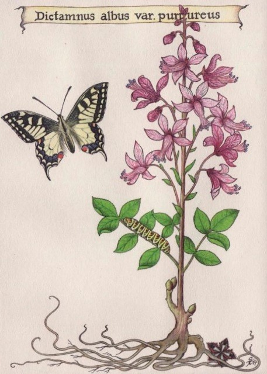

Liber Scivias
Im Jahr 1141 erfuhr Hildegard von Bingen auf dem Disibodenberg eindrückliche Visionen und gehorchte der Stimme, die sprach: „Sage und schreibe, was du siehst und hörst.“ In den nachfolgenden zehn Jahren verfasste sie ihre erste theologische Schrift "Scivias“. Diese machte sie berühmt und ebnete ihren Weg in ein eigenes Kloster auf dem Rupertsberg.
Von der Handschrift mit wunderschönen Miniaturbildern ihrer Visionen existiert eine aufwändig produzierte Faksimile-Ausgabe, die der Grazer Verlag der Disibodenberger Scivias-Stiftung für 2018 zur Präsentation zur Verfügung stellt.

Heilpflanzen
Hildegard von Bingen (1099 – 1179) gilt als Universalgelehrte, die durch eigene Ideen neue Heilmethoden für Körper, Seele und Geist ermöglichte. In von ihr beschriebenen Visionen legte sie den Grundstein für eine neue Volksmedizin, bei der sie die Heilkraft von Pflanzen, Steinen und einfachen Nahrungsmitteln erkannte. In ihrem Werk Liber subtilitatum diversarum naturarum creaturarum („Buch über das innere Wesen der verschiedenen Kreaturen und Pflanzen“) beschäftigte sie sich mit der Wirkung verschiedenster Naturheilkräuter und Pflanzen. Die Leistung Hildegard von Bingens für die Naturheilkunde basiert auf der Zusammenführung des damaligen Wissens über Krankheiten und Pflanzen aus der griechischen-lateinischen Tradition sowie der Volksmedizin.